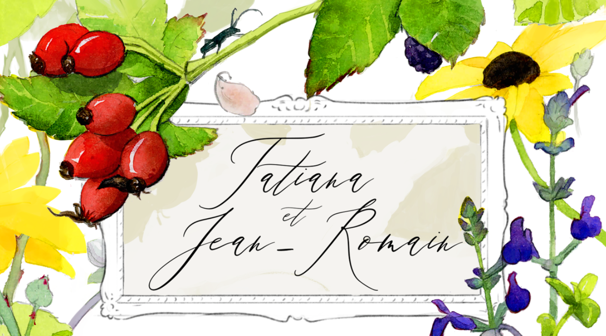

Programme
15h00
Cérémonie Civile
Rendez-vous à la Mairie d'Obernai
Place du Marché, 67210 Obernai
À suivre
Cérémonie Laïque
Une cérémonie intime dans le jardin
11 Rempart Maréchal Joffre, Obernai
Ensuite
Vin d'Honneur
Cocktails et célébrations
Pour finir
Apéritif Dînatoire
Musique
Aidez-nous à créer l'ambiance parfaite pour notre cocktail !
Nous souhaitons que chacun puisse contribuer à la playlist de notre mariage. N'hésitez pas à ajouter vos chansons préférées qui vous font danser, qui vous touchent ou qui vous rappellent de bons souvenirs.
Comment ajouter des chansons :
- Ouvrez la playlist sur Spotify en cliquant ici
- Connectez-vous à votre compte Spotify
- Cliquez sur les trois points (...) et sélectionnez "Ajouter à cette playlist"
- Recherchez et ajoutez vos chansons préférées
Accès et Parking
La cérémonie et la réception auront lieu à Obernai, Alsace, France.
Cérémonie
Mairie d'Obernai
Place du Marché, 67210 Obernai
Réception
Chez Tatiana & Jean-Romain
11 Rempart Maréchal Joffre, 67210 Obernai
Cagnotte
Quel que soit votre choix, sachez que c'est avant tout votre présence qui nous comblera de joie.